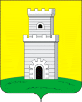

Болгарский район

Болгарский район — расположен на востоке Татарстана и граничит с несколькими другими районами республики. Это место славится живописными природными пейзажами, включая леса, поля и реки, что делает его привлекательным для любителей природы и активного отдыха.
Основные факты о Болгарском районе:
- Население: Болгарский район имеет разнообразное население, которое составляет около 30 тысяч человек. Основными этническими группами являются татары и русские, что создает многонациональную атмосферу. В районе активно развиваются социальные и образовательные учреждения, что способствует улучшению качества жизни местных жителей. Болгарский район славится своим гостеприимством и доброжелательностью, что делает его привлекательным для гостей.
- Основа экономики: Экономика Болгарского района в значительной степени основана на сельском хозяйстве. Основные направления включают выращивание зерновых, картофеля, овощей и фруктов. Также в районе развиты животноводство и птицеводство. В последние годы наблюдается рост малого и среднего бизнеса, связанного с переработкой сельскохозяйственной продукции и производством товаров местного спроса. Кроме того, значительное внимание уделяется развитию агротуризма, что способствует дополнительным источникам дохода для местных жителей.
- Культура и традиции: Болгарский район известен своим богатым культурным наследием, которое включает в себя уникальные традиции и обычаи. Здесь активно празднуются национальные праздники, такие как Сабантуй, который объединяет людей разных национальностей и возрастов. Местные жители сохраняют традиционные ремесла, такие как ковка, ткачество и изготовление керамики. В районе также проводятся культурные мероприятия, выставки и фестивали, где можно познакомиться с местной музыкой, танцами и кухней.
- Природа: Природа Болгарского района впечатляет разнообразием ландшафтов. Район богат лесами, реками и озёрами, что создаёт отличные условия для активного отдыха и рыбалки. Река Волга, протекающая рядом, является важным природным ресурсом и привлекает туристов своими живописными пейзажами. Леса полны ягод и грибов, что делает их популярными местами для сбора урожая. Климат в районе умеренно-континентальный, что способствует развитию сельского хозяйства и созданию комфортных условий для жизни.
- Туризм: Болгарский район является одним из самых привлекательных туристических направлений в Татарстане благодаря своему историческому наследию и природным красотам. Здесь находится знаменитый историко-архитектурный комплекс Болгар, который входит в список Всемирного наследия ЮНЕСКО. Туристы могут посетить древние мечети, mausoleums и другие памятники архитектуры, а также насладиться природными пейзажами. Регулярно проводятся фестивали, выставки и культурные мероприятия, которые привлекают множество посетителей. Агротуризм и экотуризм также активно развиваются, предлагая уникальные возможности для отдыха на природе и знакомства с местной культурой.